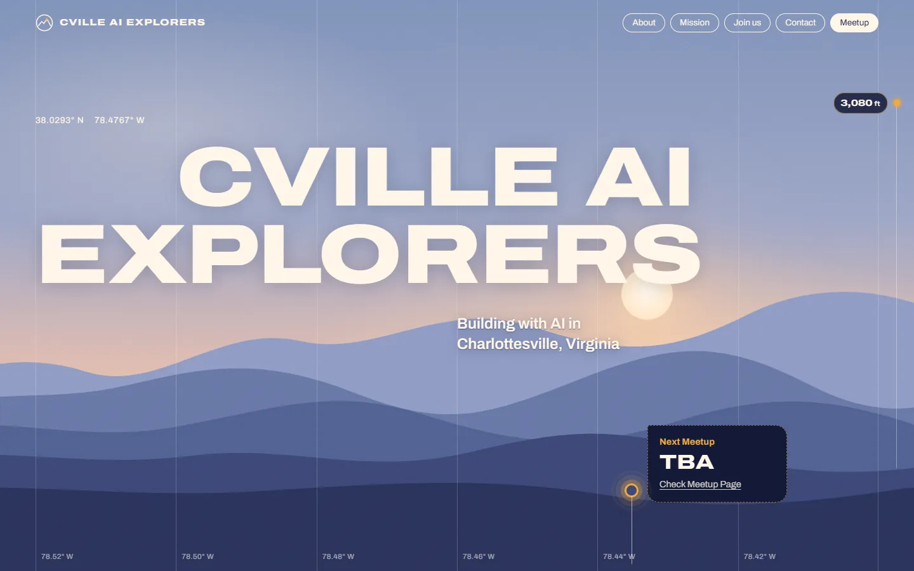
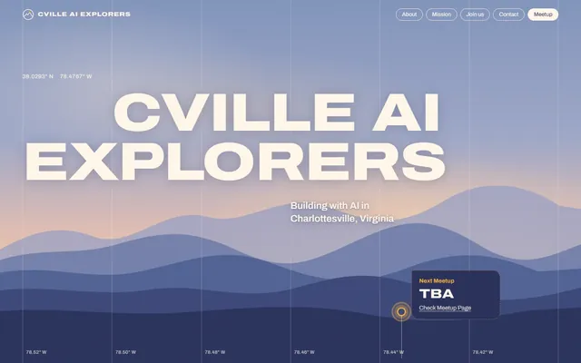
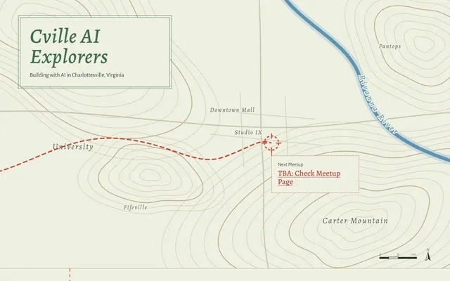
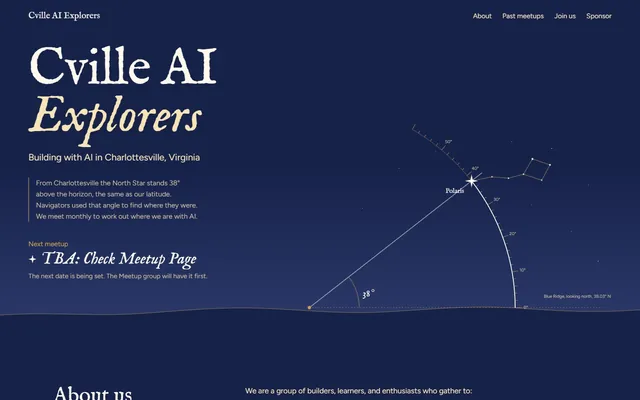
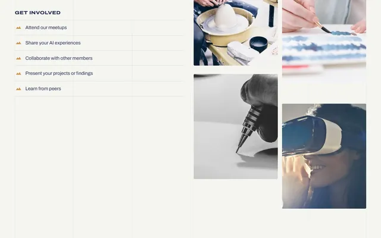

Ridgeline
One scroll-driven descent, from the Blue Ridge crest at Humpback Rocks at dusk, down through the night to the lights of Charlottesville, then indoors to the room where the meetup happens. An altimeter counts down the feet.

- Led by
- John A.
- Made with
- Claude Code, Mobbin MCP
How they got there
- Mobbin referencesJohn's team worked in Claude Code with the Mobbin MCP server connected, so the agent could pull real-world site examples.
- Three concepts side by sideThey built three directions as single HTML pages: Ridgeline, Field Map and Polaris at 38°.
- One descent, dusk to downtownThey picked Ridgeline and developed it over a few rounds into one scene that scrolls from 3,080 ft down to 594 ft and steps inside.




See the journey →Three concepts side by side, then three rounds of Ridgeline, each one a page you can open.Elements to look at
- night#131936
- warm text#FFF6E8
- marigold#F2A93B
- wall#F5F5F1
- oak#D4954E
- The altimeter
- A chip in the right margin counts down from 3,080 ft and lands at 594 ft as the page goes indoors.
- Outdoors to indoors
- A white wall rises over the night for the content, and the sponsor gets a warm oak room.
- Type
- Archivo throughout, with headlines at its widest setting in uppercase. Section headings slide in from both sides and settle.
- Photos as atmosphere
- Unframed photos with soft edges that drift and fade into the scene.